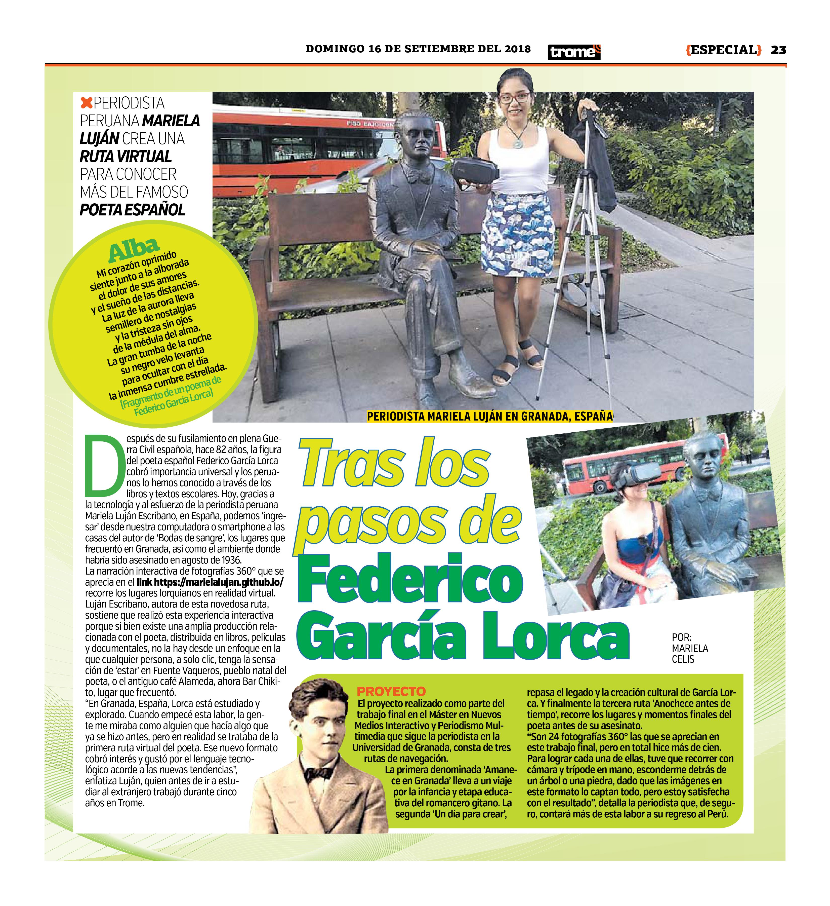

Lorca 360° en los medios
El proyecto tuvo eco en prensa de España y Perú, con reportajes en medios culturales y generalistas de ambos países.

Granada HoyEspaña · Ver noticia

La RepúblicaPerú · Ver noticia

TromePerú · Ver noticia

El PopularPerú · Ver noticia

Granada DigitalEspaña · Ver noticia

Consulado de Perú en SevillaReconocimiento institucional